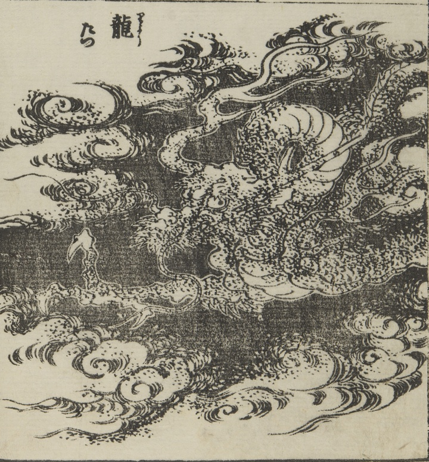

雲の間を飛び、2本の角が生えた龍。鱗虫の長で、よく雲雨をおこすという。
著作者：中村惕齋・下河辺拾水／出典：親書誌：U426_nichibunken_0455：頭書増補訓蒙図彙大成；カシラガキゾウホキンモウズイタイセイ／日付：2025／資源識別子：U426_nichibunken_0455_0014_0000
Copyright (c)2010- International Research Center for Japanese Studies, Kyoto, Japan. All rights reserved.